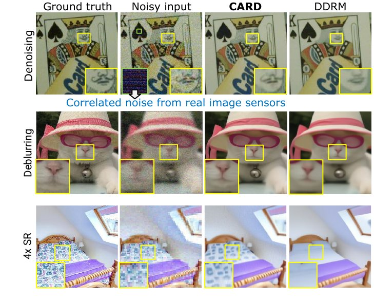

CVPR 2026
Restoring images under real, correlated sensor noise
Rolling-shutter sensors produce spatially correlated noise, which breaks the independent-noise assumption behind most restoration methods. CARD whitens the measurement and then runs a pretrained diffusion model with closed-form updates, without retraining, for denoising, deblurring and super-resolution.
I modeled the sensor noise and built CIN-D: 400 real captures of 100 indoor and outdoor scenes at three noise levels, with long-exposure ground truth.